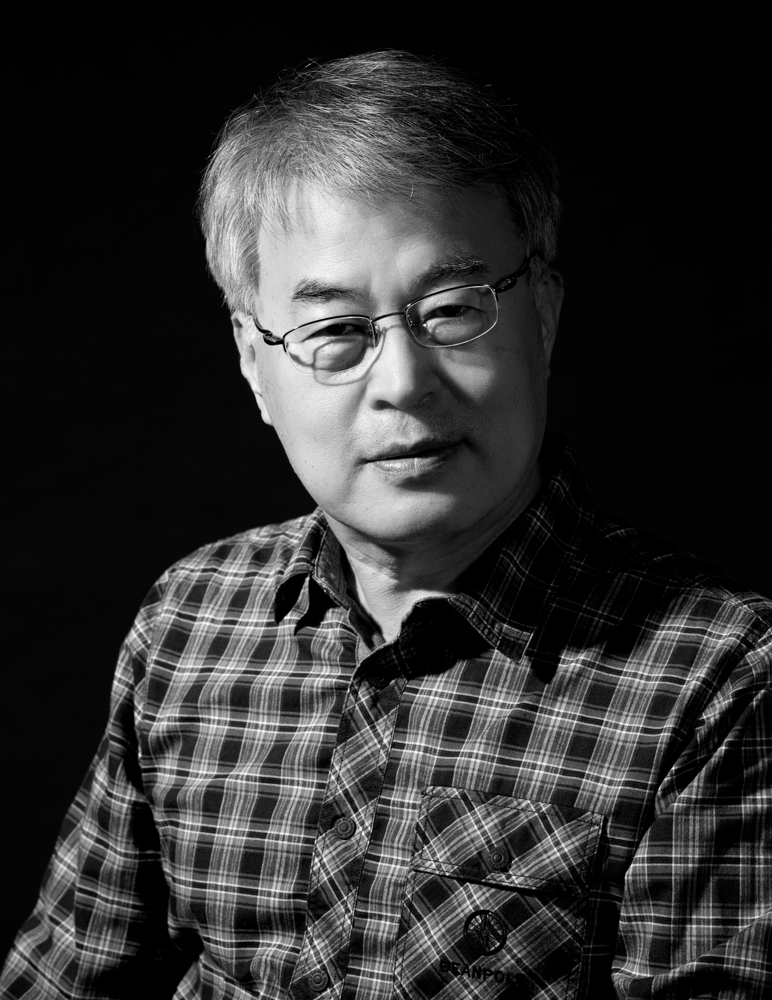

서석장 / Seo Seok-Jang

나는 오랜 시간 사람의 삶과 흔적이 머문 장소를 사진으로 바라보아 왔다. 바다와 산사, 기도의 장소, 고분과 오래된 건물은 서로 다른 풍경이지만, 그 안에는 시간과 기억, 그리고 사람의 흔적이 남아 있다.
바다에서는 하루하루 달라지는 풍경과 그 앞에 선 나 자신을 바라보고, 산사에서는 문과 마당을 지나며 드러나는 공간의 변화를 따라간다. 기도의 장소에서는 사람이 떠난 뒤 남겨진 사물에 시선을 두며, 고분과 오래된 건물에서는 지난 시간과 오늘의 삶이 만나는 자리를 바라본다.
장소에 따라 사진의 표현도 달라진다. 때로는 흑백으로 형태를 선명하게 드러내고, 때로는 거친 입자로 형태를 흩뜨리며, 서로 다른 장면을 한데 묶기도 한다. 나에게 사진은 장소에 남은 시간과 흔적을 바라보고 기록하는 과정이다.
For a long time, I have photographed places marked by human life and its traces. The sea, mountain temples, places of prayer, burial mounds, and old buildings are very different landscapes, yet each holds layers of time, memory, and human presence.
At the sea, I look at the landscape as it changes from day to day, and at myself standing before it. In mountain temples, I follow the changing spaces revealed as I pass through gates and courtyards. At places of prayer, I turn my attention to objects left behind after people have gone. At burial mounds and old buildings, I look at where the past meets life in the present.
My photographic approach changes with each place. At times I use black and white to clarify form; at others I let coarse grain dissolve it, or bring separate scenes together. For me, photography is a process of looking at and recording the time and traces that remain in a place.